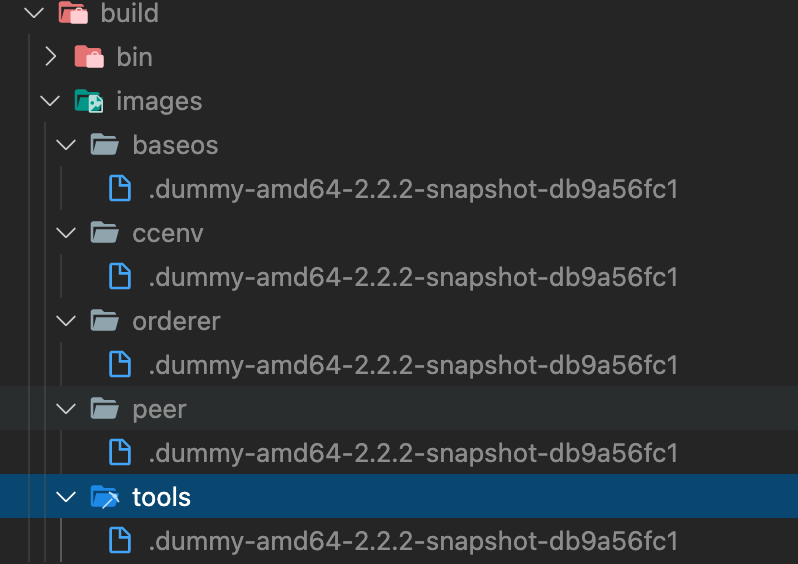

Makefile编译Fabric源码¶
Makefile 的用途是什么？¶
man make描述: The purpose of the make utility is to determine automatically which pieces of a large program need to be recompiled, and issue the commands to recompile them.
make 程序的目的是自动化决定大型应用哪些部分需要被再编译，并且发布再编译的命令。
make程序可以让”将源代码转化成可执行文件“之类的例行化工作自动化。 –《 GNU Make 项目管理 》
makelfile 用途就是 make 程序存放工作细节的文件。
Makefile 在Fabric使用场景是什么？¶
Fabric 使用 Makefile 编译可执行文件和docker镜像等。
Fabric 源码目录下就有一个 Makefile 文件，记录了如何编译可执行文件和 docker 镜像。
cd $GOPATH/src/github.com/hyperledger/fabric
make dist-clean all
执行以上命令，就可以编译编译可执行文件和 docker 镜像。
make dist-clean all 命令的效果是什么？¶
- 生成如下文件.dummy-amd64-2.2.2-snapshot-db9a56fc1 
- 生成5个docker 镜像：
hyperledger/fabric-tools，hyperledger/fabric-peer，hyperledger/fabric-orderer，hyperledger/fabric-baseos，hyperledger/fabric-ccenv
make dist-clean all 命令解析¶
make dist-clean all 首先执行make dist-clean，过程如下
# 遍历各操作系统名称并删除对应 `release` 文件。
RELEASE_PLATFORMS = darwin-amd64 linux-amd64 windows-amd64
PROJECT_VERSION = 2.2.2-snapshot-db9a56fc1
.PHONY: dist-clean
dist-clean:
-@for platform in $(RELEASE_PLATFORMS) ""; do \
[ -z "$$platform" ] || rm -rf release/$${platform}/hyperledger-fabric-$${platform}.$(PROJECT_VERSION).tar.gz; \
done
接下来执行make all，过程如下
# make all的目标，依次执行check-go-version native docker checks
.PHONY: all
all: check-go-version native docker checks
# check-go-version 执行scripts/check_go_version.sh文件，获取go的version。
.PHONY: check-go-version
check-go-version:
@scripts/check_go_version.sh $(GO_VER)
# native ：如何bin目录下不存在可执行文件就使用 go install 生成对应可执行文件
# 举例：如果bin目录下缺少orderer文件，就会执行 go install 生成orderer文件
RELEASE_EXES = orderer configtxgen configtxlator cryptogen discover idemixgen peer
.PHONY: native
native: $(RELEASE_EXES)
.PHONY: $(RELEASE_EXES)
$(RELEASE_EXES): %: $(BUILD_DIR)/bin/%
$(BUILD_DIR)/bin/%: GO_LDFLAGS = $(METADATA_VAR:%=-X $(PKGNAME)/common/metadata.%)
$(BUILD_DIR)/bin/%:
@echo "Building $@"
@mkdir -p $(@D)
GOBIN=$(abspath $(@D)) go install -tags "$(GO_TAGS)" -ldflags "$(GO_LDFLAGS)" $(pkgmap.$(@F))
@touch $@
# docker 分别生成images目录下对应文件夹的镜像
# 举例，如果images/peer目录下没有文件，则会使用images/peer/Dockerfile 生成镜像
.PHONY: docker
docker: $(RELEASE_IMAGES:%=%-docker)
.PHONY: $(RELEASE_IMAGES:%=%-docker)
$(RELEASE_IMAGES:%=%-docker): %-docker: $(BUILD_DIR)/images/%/$(DUMMY)
$(BUILD_DIR)/images/ccenv/$(DUMMY): BUILD_CONTEXT=images/ccenv
$(BUILD_DIR)/images/baseos/$(DUMMY): BUILD_CONTEXT=images/baseos
$(BUILD_DIR)/images/peer/$(DUMMY): BUILD_ARGS=--build-arg GO_TAGS=${GO_TAGS}
$(BUILD_DIR)/images/orderer/$(DUMMY): BUILD_ARGS=--build-arg GO_TAGS=${GO_TAGS}
$(BUILD_DIR)/images/%/$(DUMMY):
@echo "Building Docker image $(DOCKER_NS)/fabric-$*"
@mkdir -p $(@D)
$(DBUILD) -f images/$*/Dockerfile \
--build-arg GO_VER=$(GO_VER) \
--build-arg ALPINE_VER=$(ALPINE_VER) \
$(BUILD_ARGS) \
-t $(DOCKER_NS)/fabric-$* ./$(BUILD_CONTEXT)
docker tag $(DOCKER_NS)/fabric-$* $(DOCKER_NS)/fabric-$*:$(BASE_VERSION)
docker tag $(DOCKER_NS)/fabric-$* $(DOCKER_NS)/fabric-$*:$(TWO_DIGIT_VERSION)
docker tag $(DOCKER_NS)/fabric-$* $(DOCKER_NS)/fabric-$*:$(DOCKER_TAG)
@touch $@
# 基础测试 单元测试 集成测试
.PHONY: checks
checks: basic-checks unit-test integration-test